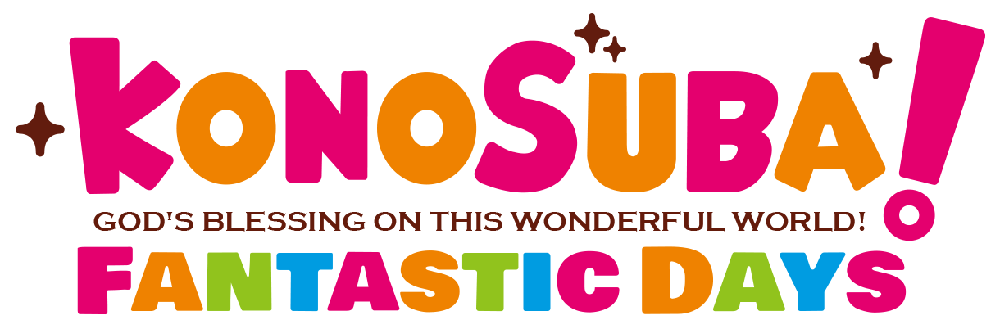

Las recompensas que se pueden canjear en estos menus son sin duda objetos de la mejos calidad posible, con la excepcion de en algunos casos son lo mas util a lo que deberiamos aspirar a conseguir |
 |
|  |
A lo largo de el juego seremos capaces de conseguir varios tipos de monedas canjeables en un menu especial, estas monedas las podremos conseguir mediante la realizacion de misiones especiales, intentos en las arenas, liberacion de personajes repetidos y eventos. |